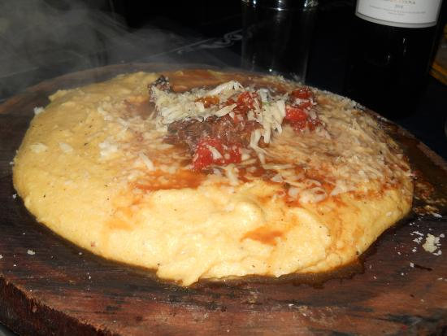

polenta

Descripcion
Potente plato de polenta con tuco y queso
Ingredientes
- 1 Cebolla
- pimiento
- Aceite
- Carne picada 300g
- 2 tomates
- Condimento para carnes
- caldo de carnes
- 2 huevos duros
- polenta instantanea
- pimienta
- Queso rallado
- pimienta negra
- queso cremoso 300g
- perejil deshidratado
Pasos para la salsa
- Picá la cebolla y el pimiento.
- Rehogalos en una sartén a fuego medio con un poco de aceite por unos 5 minutos hasta que se ablanden.
- Añadí la carne picada y cociná todo por 10 minutos más hasta que la carne cambie su color.
- Añadí los tomates cortados en cubos pequeños y condimentá con sal y Condimento para Carnes Alicante
- Cociná todo a fuego bajo por unos 15 minutos más. Incorporá los huevos picados y las aceitunas fileteadas.
Pasos para la polenta
- En una olla llevá a hervor 3 tazas de agua y disolvé ahí el Caldo para Saborizar de Carne Alicante.
- Agregá la polenta y revolvé constantemente mientras la cocinás durante 1 minuto a fuego medio.
- Añadí queso rallado y condimentá con Pimienta Negra en Grano Alicante recién moldia.
- En una fuente para horno previamente enmantecada colocá la polenta y luego la salsa hecha previamente.
- Por encima colocá queso cremoso en pequeños trozos y Perejil Alicante
- Llevá la preparación a horno fuerte por unos 10 minutos hasta que el queso se derrita.